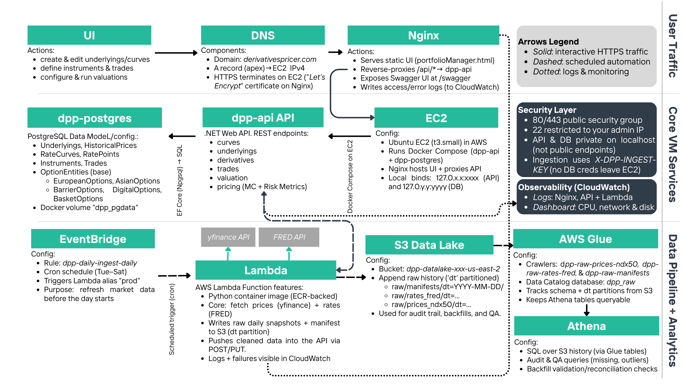
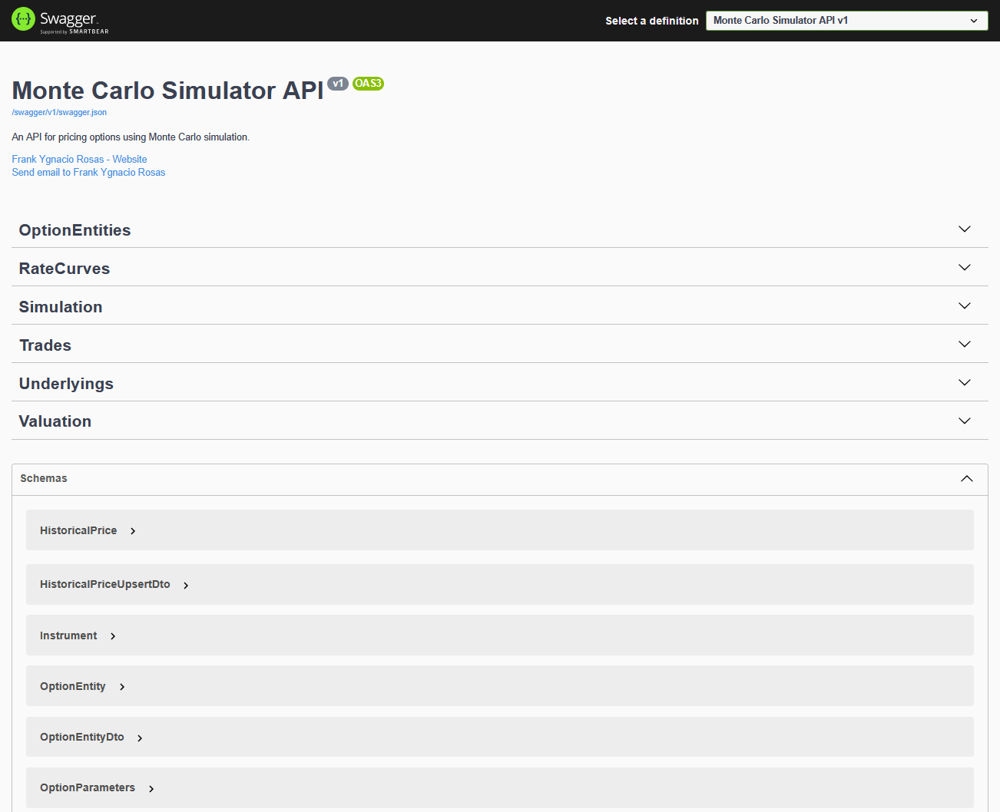
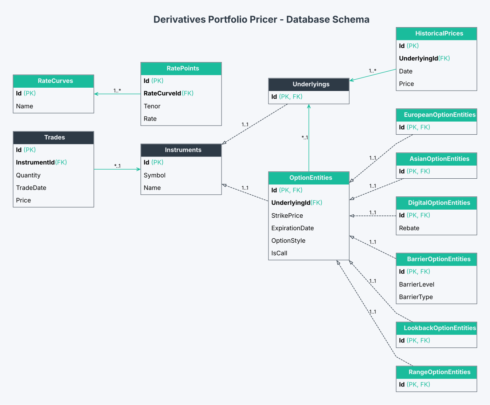
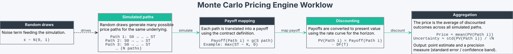
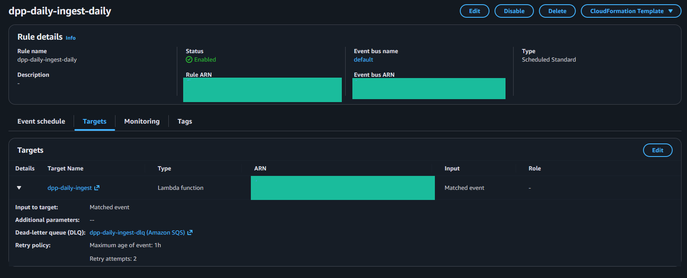
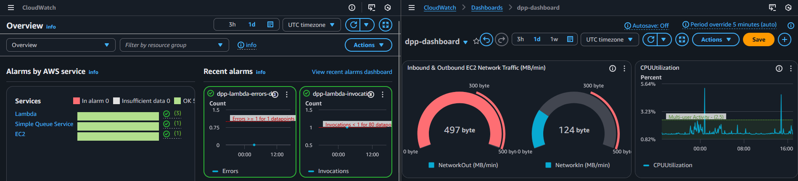

Manage underlying assets by creating entries or editing existing ones with symbols, names and historical price data. Browse underlyings, explore details with tables and interactive charts. Predefined underlyings are updated daily and cannot be edited.
| ID | Symbol | Name | Historical Prices | Actions |
|---|
| ID | Symbol | Name | Historical Prices | Actions |
|---|
| Symbol | Date | Price |
|---|
Define and manage derivative contracts with configurable strike, expiration, option style and underlying asset. Review existing contracts in a table with edit and delete actions available when permitted.
| ID | Symbol | Name | Strike | Expiration | Option Type | IsCall | Underlying | Actions |
|---|
Record and manage trades by associating instruments with quantities, dates and prices. Create or update positions for underlyings and derivatives. Review trades in a table with sorting and edit options.
| ID | Instrument ID | Instrument Symbol | Instrument Name | Quantity | Trade Date | Price | Actions |
|---|
Manage yield curves by creating, renaming and loading rate curves. Edit rate points in a grid, view curves list and inspect detailed information through tables and charts for comprehensive analysis. Predefined rates are updated daily and cannot be edited.
| ID | Name | Rate Points | Actions |
|---|
| ID | Name | Rate Points | Actions |
|---|
| Name | Tenor | Rate |
|---|
Select trades to value and set parameters for Monte Carlo simulations. Set steps, simulations, variance options and choose a rate curve. View each trade’s result and the portfolio value with risk metrics.
| Select | ID | Instrument Symbol | Instrument Name | Quantity | Trade Date | Price |
|---|
| Trade ID | Instrument Symbol | Instrument Name | Value | StdErr | Delta | Gamma | Vega | Theta | Rho | Underlying Volatility | Market Interest Rate |
|---|
Learn about the Derivatives Portfolio Pricer project: its purpose, architecture and capabilities.
The Derivatives Portfolio Pricer (DPP) is an open-source, full-stack derivatives portfolio valuation platform deployed entirely in the cloud and designed for buy-side valuation workflows. It combines a browser user interface (UI), a pricing API, a relational database, and an automated market-data pipeline. Its goal is to manage instruments and trades using front-office-grade processes and controls in order to value the portfolio with a Monte Carlo engine that returns both prices and risk metrics.
The workflow mirrors how valuation is handled by practitioners. The first step is to define the market inputs; at the minimum, that includes underlyings with historical prices and interest rate curves. The second step is to define the instruments, link them to underlyings, and create trades with quantities and dates. Finally, the valuation engine uses those inputs to return prices and risk metrics for each trade, allowing an aggregated computation at the portfolio level.
The platform supports classical and exotic derivatives. The core outputs are driven by a multi-method Monte Carlo engine, and are the following:
The most effective way to understand the DPP architecture is thinking of it as two connected "flows": one flow is the “interactive valuation” and the other one is the “daily data ingestion.”
This is what the user experiences in the browser. The DPP website is served by a software called "Nginx", which hosts the UI files and routes any action (like adding instruments, saving trades, etc.) to the API service. The API then reads from and writes to the Postgres database, and it executes the pricing logic when the user requests a valuation.
This is what keeps the system current. We use an Amazon Web Service (AWS) called EventBridge, which triggers a scheduled "job" (AWS Lambda) on a set schedule. That job pulls market data for our predefined underlyings and yield curves from external sources, writes raw snapshots into a centralized cloud storage (S3), and then pushes a cleaned version of the data into the API so the database stays up to date. Other AWS services tools involved are Glue crawlers, which scan the new S3 snapshots to infer schema and partitions to update the data catalog, and Athena, which queries the history using SQL for audits, backfills, and quality checks.
The intention of this platform is not to be a regular pricing option tool (which, indeed, is not the hard part). Instead, it's designed as an operating system that is able to perform a specific task reliably at a production level. In this case, we implemented a valuation task, but the same system layout can be applied for many any other financial task (budgeting, risk management, etc.).
In that sense, this platform deliberately prioritizes the efficiency, operability and security of the system by:
Hence, we can summarize the production-style architecture in 6 layers:
/api/ is then forwarded to the internal API running locally on the same EC2 host.Each layer will be discussed in further sections.
In DPP, only the web ports are public, while the API and database are kept private behind Nginx and localhost routing. Thus, regular ingestion uses an authenticated API key header rather than exposing database credentials outside the host. This is a common practice among internal systems designed to keep the public surface area small, concentrate trust in a single entry point, and make control points explicit (authentication, logging, and permission boundaries).

Figure 1. End-to-end DPP's system architecture
Diagram divided by operating task: user traffic, VM/host functionality, and Data Pipeline.
In DPP, the front door is the only public entry point of the platform. It receives a browser request, decides whether the request is asking for a static file (the UI) or an application action (an API call), and then routes it safely to the correct internal component. In other words, this layer is the perimeter that defines what the internet can and cannot touch.
We implemented this with Nginx since it is a mature and production‑standard web server for hosting static sites and acting as a reverse proxy. That dual role matters here. The UI should be fast and cacheable, while the API should be reachable only through a controlled gateway that can enforce consistent routing and keep the public surface area small.
A practical way to understand the routing is that DPP has two “types” of HTTP requests, and Nginx handles both deterministically:
/api/.
/api/ request, it forwards the request to the internal API service, which is intentionally not exposed directly to the public internet.
This split is deliberate. Applications usually loads a lightweight UI once, and then the browser makes small, explicit API calls as needed. That is a common pattern in internal trading and risk tools because it keeps the UI responsive while preserving a clean transactional boundary on the server side.
The most important design decision is that only web traffic is public. Internal services are treated as private components and are reachable only through the application’s routing rules. This keeps secrets and write access paths out of the public network path. In that sense, the system is easier to reason about: if something is reachable from the internet, it is reachable through one door, under one hostname, with one routing policy.
From an operability perspective, this also accelerates debugging. For instance, if the UI loads but API actions fail, the problem is downstream in the application tier. If the UI itself does not load, the issue is at the web server level (deployment, routing, or static assets). That separation reduces the scope of failure and makes outages more diagnosable.
The application layer is where DPP stops being a static website and becomes a system. The browser UI is intentionally lightweight; i.e., every meaningful action the user takes (creating an underlying, defining an option contract, saving a trade, updating a curve, or running a valuation) becomes an API request that is validated, persisted, and executed server‑side.
This is exactly how production tools are typically structured. The UI should be fast and user‑friendly, but the “truth” must live behind a transactional boundary, where inputs can be validated consistently and where results can be reproduced later from stored records.
We think of the API as having two jobs. The first is portfolio and market‑data management: it enforces the relationships between objects (an option references a valid underlying; a trade references a valid instrument; a curve contains coherent rate points). The second job is valuation orchestration: it reads the current portfolio state and market inputs from the database, calls the pricing engine with the selected simulation settings, and returns structured results back to the UI.
The practical advantage is consistency. The API is the only write path to the database, so the system can enforce the same validation rules regardless of whether the request originated from a browser click or from the automated ingestion pipeline.
For transparency and testability, the API exposes interactive documentation through Swagger at /swagger.
Each endpoint has a defined request/response shape, which makes the platform auditable and reduces the “black box” problem that often exists in financial tooling.

Figure 2. DPP API documentation via Swagger UI
Interactive endpoint testing for entity management and valuation workflows.
An example of a valuation cycle across the platform can be summarized in 4 steps:
The key point is that this lifecycle is stateful; i.e., the API persists the objects so valuation is reproducible, and it returns results in a way that supports aggregation at the portfolio level. That is the difference between a simple calculator and an operating platform.
The database layer is what makes DPP reliable and repeatable. In a valuation workflow, the hardest operational problem is not computing a price once; it is ensuring that users can reproduce a valuation later using the same portfolio state and the same market inputs. DPP addresses that by using Postgres as the persistent store for both “portfolio objects” and the time series that drive pricing.
Importantly, the database is treated as a private component. The UI never talks to Postgres directly, and the ingestion pipeline does not bypass the API. All writes flow through one controlled path, which keeps schema rules, validation logic, and permission boundaries centralized.

Figure 3. Core DPP database model
Entities and relationships of DPP's database.
At a high level, the schema has two connected domains: (1) portfolio objects that define what is held, and (2) market inputs that define how those holdings should be valued. The following summary reflects the intent of the model rather than an exhaustive listing of every column:
| Domain | What it represents | Why it matters |
|---|---|---|
| Instruments | Underlyings plus option contracts (classical and exotic) | Preserves contract terms so trades can be re‑valued consistently |
| Trades | Positions that reference an instrument with quantity and dates | Makes valuation portfolio‑aware rather than “one‑off” pricing |
| Historical prices | Time series linked to an underlying | Supports volatility estimates and scenario generation |
| Rate curves | A curve header plus rate points across maturities | Enables discounting and rate sensitivity measurement |
Under the hood, the model relies on basic relational guarantees: trades must reference a valid instrument, historical price rows must reference a valid underlying, and curve points must reference a valid curve. Those constraints may sound mundane, but they are exactly what prevents “silent data corruption” in practice. Thus, if a dependency is missing, the system fails loudly instead of producing a misleading valuation.
In that sense, the database is the integrity layer that turns the platform into a controllable system and keeps the UI simple.
A subtle but important design choice is how option contracts are represented. DPP keeps common option parameters centralized while allowing contract‑specific fields (barriers, averaging windows, lookback logic, digitals, and range constraints) to live in structured extensions. This preserves clarity and makes it straightforward to add new exotic features without turning the schema into one oversized table.
In the interactive flow, Postgres holds the operational state the application needs to function quickly. In parallel, the raw historical snapshots live in the data lake (S3). In that sense, Postgres is optimized for “what the system needs right now,” while the data lake is optimized for “what the system has ever seen,” which is critical for audits and backfills.
The pricing layer is the computational core of DPP. Its job is to take a well‑defined contract, a well‑defined set of market inputs, and a well‑defined simulation configuration, and then produce a valuation result that is both interpretable and reproducible. In practice, that means a Monte Carlo engine that generates price paths, maps them into payoffs, discounts them, and aggregates them into a price estimate with an explicit measure of uncertainty.

Figure 4. Monte Carlo pricing intuition
Simulated paths → payoff mapping → discounting → aggregation into price and uncertainty.
What this layer intentionally does not do is “guess” the portfolio state. The portfolio (trades and instruments) and market inputs (prices and curves) are retrieved from the database through the API. This separation keeps the engine focused on the mathematics, while the application layer remains responsible for validation, persistence, and orchestration.
Conceptually, every valuation run follows a repeatable sequence: generate random shocks, evolve the underlying price through time, compute the payoff at maturity (or along the path for path‑dependent contracts), discount the payoff back to today, and then average across paths. The same run also produces a standard error, which is a practical diagnostic: it tells the user whether the number of paths should be increased, or whether the estimate is already stable.
In addition, because the platform supports multiple option styles, the payoff logic is modular. Thus, a European payoff depends only on the terminal price, while an Asian or lookback payoff depends on the full path. Also, barrier and digital contracts introduce discontinuities, which is exactly where variance reduction and better sampling can materially improve stability.
DPP’s implementation supports practical Monte Carlo enhancements that are common in production settings. These include antithetic sampling, control variates, optional low‑discrepancy sequences, and parallel execution to accelerate runtime. The objective is not to overwhelm the user with theory; it is to expose the knobs that matter when users have to balance accuracy, stability, and compute cost.
As a general outline, the platform returns the following information:
In that sense, pricing in DPP is a callable service inside a system, with persisted inputs and structured outputs. That is what makes the platform “production‑style”: the engine is operationally embedded and fully available for users.
A valuation engine is only as good as the inputs it consumes. If market data becomes stale, the system becomes misleading even if the model is mathematically correct. For that reason, DPP includes a dedicated data engineering layer that refreshes predefined market inputs on a schedule and keeps an auditable history of what was ingested and when.
Notice that the overall goal is not “big data”, but operational continuity; i.e., the platform should be usable on any day without manual data loading, while still retaining the ability to trace and audit the snapshots that supported a given valuation.

Figure 5. DPP ingestion control plane (AWS)
Core EventBridge schedule rule, and base Lambda target.
As a general outline, the ingestion workflow can be summarized in the following steps:
In the current configuration, S3 stores raw snapshots as partitioned files using a dt=YYYY-MM-DD convention.
Equity price extracts are written under raw/prices_ndx50/, and rate series extracts are written under raw/rates_fred/,
with filenames that include a UTC run identifier so each execution produces a unique, append-only artifact.
Each run also writes a lightweight manifest under raw/manifests/. The manifest records the run timestamp, the “as-of” dates used for prices and rates,
row counts sent to the API, the curve names updated, and the exact S3 keys produced in that run. Glue crawlers catalog these prefixes and recognize the dt= partitions,
which keeps Athena queries stable and efficient.
In particular, in Athena, partition pruning can filter by snapshot date, and the manifest table can be joined back to the snapshot
tables to reconstruct the precise market inputs generated by a specific ingestion run.
This design also keeps concerns separated: the application database stays lean and focused on operational needs, while the data lake retains the full ingestion lineage. That is the same separation seen in production analytics stacks, even when the underlying dataset is small (like, arguably, in this case).
In practice, ingestion has to be resilient to real‑world data issues: intermittent upstream outages, throttling, and partial responses. That is why the job is designed around repeatable runs, retries, and clear “what happened” artifacts. Mainly, the manifest records act as the bridge between the operational system (Postgres) and the historical archive (S3). In that sense, we can always point to a specific run and see what datasets were produced, instead of treating the data lake as an opaque folder.
Over time, this becomes a governance tool. If a valuation is questioned, we can trace the market snapshot that supported it. Similarly, if a backfill is required, Athena can query historical partitions without touching the operational database. In that sense, the data engineering layer is both a refresh mechanism and an audit mechanism.
Observability is what makes DPP operable day to day. In a valuation platform, a silent failure is worse than an obvious one: if a scheduled ingestion does not run or if an application regression is introduced, the system can drift without the user noticing. For that reason, we treat observability as a first‑class layer rather than an afterthought.

Figure 6. CloudWatch operational visibility
Logs, metrics, and alarms used to validate ingestion runs and monitor runtime errors.
DPP produces operational signals at each boundary. At the edge, web server logs capture request volume and failures. In the application tier, API logs capture validation failures and runtime exceptions. In the ingestion tier, each scheduled run emits a structured timeline that can be tied back to the artifacts written into the data lake. None of these streams are useful in isolation; the value comes from having them centralized so we can reconstruct the sequence of events across layers.
DPP centralizes logs from the ingestion runtime, the web server edge, and the API runtime, which provides a coherent timeline of system behavior. In addition, basic metrics (invocations, errors, and duration) allow for alarms when something deviates from the expected pattern. The objective is to reduce “time to diagnosis”: when something breaks, the system should reveal the problem quickly and with enough context to fix it.
From the user’s perspective, this shows up as predictability and faster fixes. If ingestion fails, it is visible immediately and can be corrected before it affects the next valuation. If the API begins returning errors, the logs can be traced to the exact endpoint and request path involved. In that sense, observability is not “extra”; it is the mechanism that makes the platform trustworthy as an operating system rather than a fragile demo.
Finally, this layer closes the loop with security. When the public surface area is intentionally small, logs become the audit trail that proves the boundary is working. Over time, that auditability is what enables stricter controls (authentication, user roles, change tracking) without losing the ability to diagnose issues quickly.
DPP is intentionally “small but complete.” It proves an end-to-end valuation workflow, and it proves the ability to operate that workflow on cloud infrastructure. The natural next step is to deepen governance and market realism without losing clarity.
In that sense, DPP as a software has some natural extensions and improvements :
In that sense, the project is both a valuation tool and a financial database & software architecture. It connects instrument mechanics, data engineering, and cloud deployment into one coherent that, at least in this implementation, is completely open source.